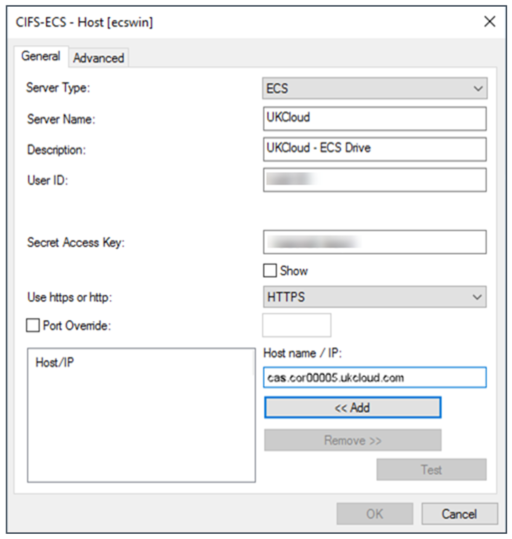
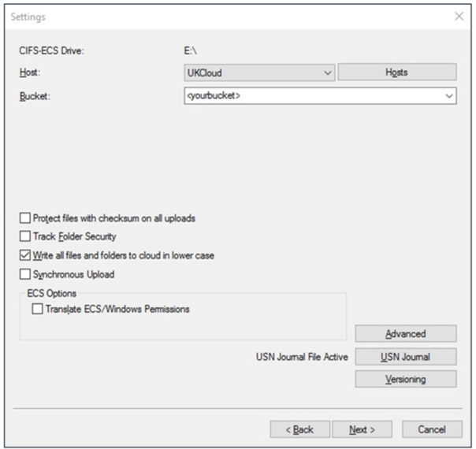
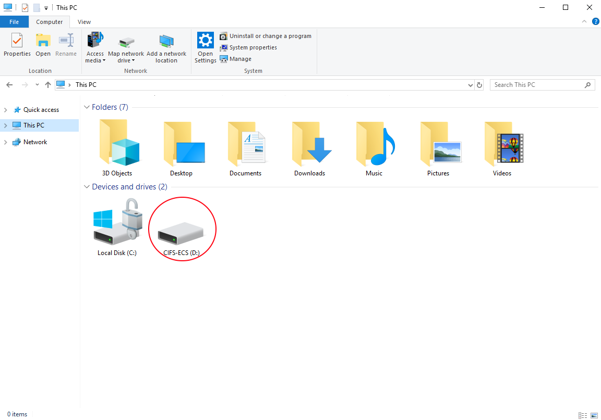
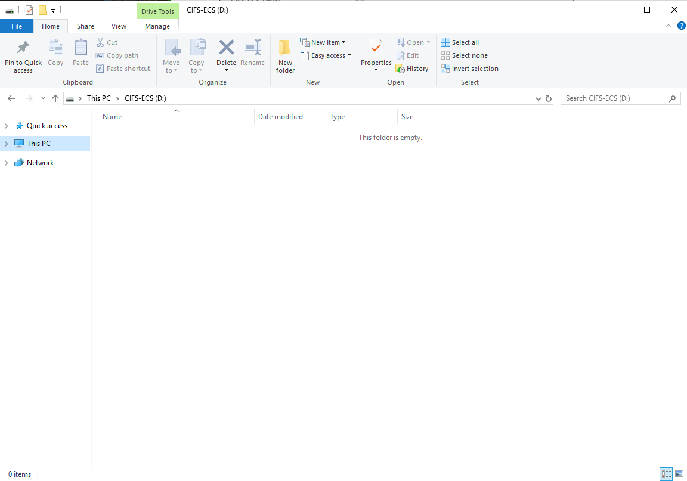

How to install the CIFS-ECS Tool
What is CIFS-ECS?
CIFS-ECS is a free application that runs on Windows and Windows Server, exposing UKCloud Cloud Storage as file systems. It’s designed as an easy way to use object storage by enabling Windows applications to interface with Cloud Storage servers using the popular S3 REST API.
If you require a fully-integrated cloud gateway appliance with features like advanced deduplication and location caching, you may want to consider CloudArrary as an alternative.
Note
Unlike CIFS-ECS, CloudArray is not a free application.
Use cases
You can use CIFS-ECS to:
Expose UKCloud Cloud Storage for native access on Windows through a centralised server With CIFS-ECS installed on a centralised Windows Server installation.
Present Cloud Storage as storage for applications, without additional development.
Use Cloud Storage as a target for backups or long-term file retention.
Before you begin
CIFS-ECS offers a single caching option:
Stub: files are initially stored locally and replaced with a stub, or shortcut, after a period of time. When you access a file that has been stubbed, it will be retrieved from the cloud. This offers the best scalability, as you can use a virtually unlimited amount of cloud storage.
Installing CIFS-ECS
Navigate to the following URL to download the ZIP file that contains the CIFS-ECS installer.
Extract and run the setup launcher from the ZIP file.
Step through the wizard, adjusting values to suit your environment.
Note
The Data Directory is used as a local cache for any content you place in the CIFS-ECS drive, so you may want to put this on a non-system volume.
When the installation is complete, click Add CIFS-ECS Drive to open the Drive Parameters page.
On the Drive Parameters page, select any available drive letter from the drop down menu to use as the CIFS-ECS drive then click Next.
Optional: give your ECS drive a description.

On the Settings page, click the Hosts button to configure the connection to the Cloud Storage service.
On the General tab, click the Add button and configure the settings as shown in the following example:
You can find the User ID in the Storage section of the UKCloud Portal.
If you’ve forgotten or don’t know your Secret Access Key, you can reset it in the Storage section of the Portal.
Note
The Server Name and Description can be anything, but must not be blank. In the example it is shown as
UKCloudandUKCloud - ECS Drive.
From the Use https or http list, select HTTPS.

In the Host name / IP field input one of the following S3 API endpoints:
Corsham (Assured)
Internet:
cas.cor00005.ukcloud.comPSN Assured:
cas.cor00005.psnassured.ukcloud.comN3/HSCN:
cas.cor00005.ukcloud.thirdparty.nhs.uk/
Farnborough (Assured)
Internet:
cas.frn00006.ukcloud.comPSN Assured:
cas.frn00006.psnassured.ukcloud.comN3/HSCN:
cas.frn00006.ukcloud.thirdparty.nhs.uk/
Deselect the Port Override check box.
Click OK to return to the Settings page.
The rest of the fields on the Settings page enable you to configure the root directory, encryption and compression settings.
Tip
Configure these fields appropriately for your environment, or accept the defaults. We suggest you give the root directory a friendlier name, so that you can more easily identify it.

Click the Advanced button to configure various thresholds, such as how long a local file will be retained before being replaced with a stub.
Click Next to get to the Logging page.
Change the settings on the Logging page to meet your requirements.
Click Finish to complete the wizard. CIFS-ECS connects to Cloud Storage and starts synchronising any content you put on the drive letter you assigned to it.

You can share the CIFS-ECS drive, or a folder within it, so that other machines on the network can access it.
  Tip
See Microsoft's How-To guide on how to share a a drive on the network from Windows.
Next steps
This guide has shown you how to create a new Cloud Storage user. For more information about how to use the service, see the following articles:
How to create a new Cloud Storage user in the UKCloud Portal
Cloud Storage Gateways
Related videos
Feedback
If you find an issue with this article, click Improve this Doc to suggest a change. If you have an idea for how we could improve any of our services, visit UKCloud Ideas. Alternatively, you can contact us at products@ukcloud.com.